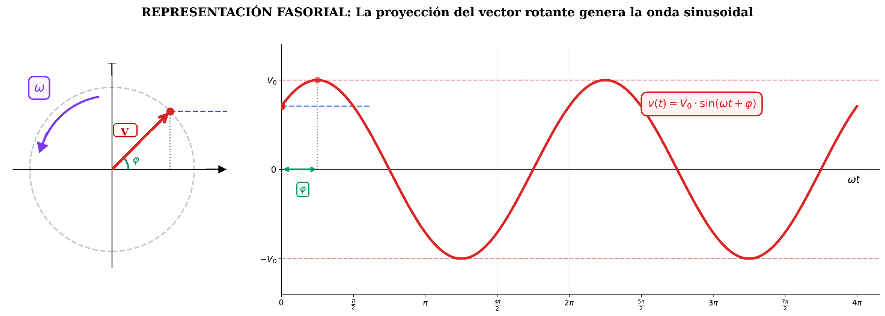
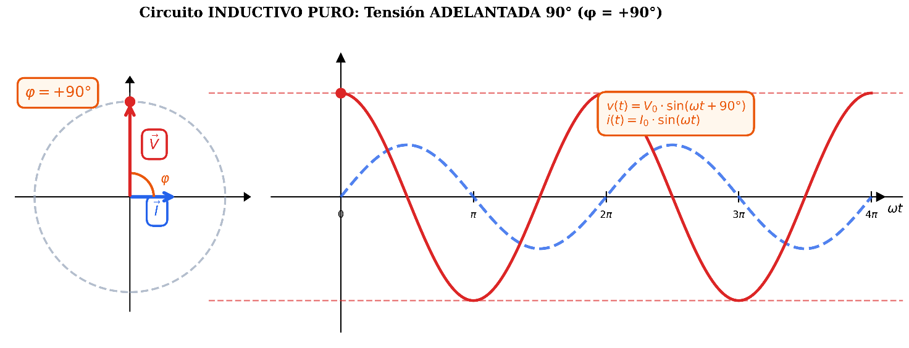
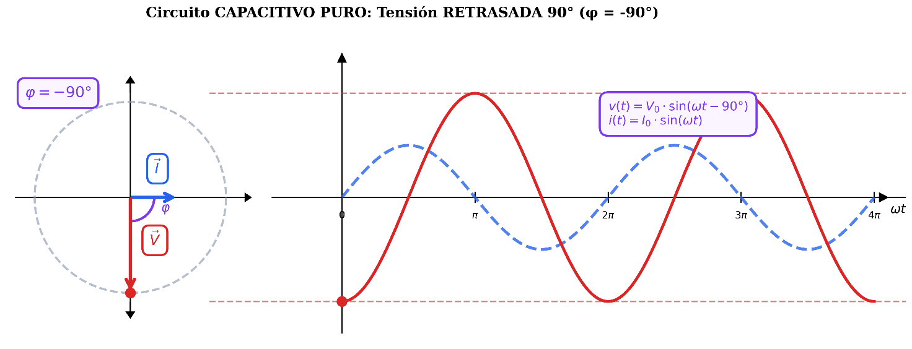
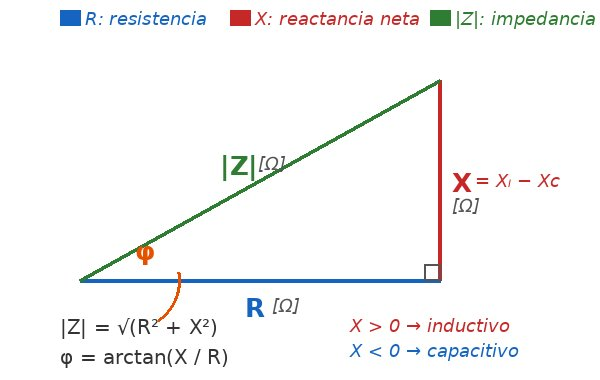

Tecnología e Ingeniería II · 2º Bachillerato · IES Jiménez de Quesada
Bloque D1 — Corriente Alterna
Apuntes adaptados para PEvAU · Junta de Andalucía · Curso 2025–2026
〰️ Onda senoidal📐 Fasores y Fresnel⚡ R, L, C🔄 Impedancia y reactancia📊 RLC serie y paralelo⚡ Potencias y \(\cos\varphi\)
🎯 Objetivos de aprendizaje
Interpretar los parámetros de una onda senoidal: amplitud, valor eficaz, medio, frecuencia, pulsación y fase.
Representar tensiones e intensidades como fasores y construir diagramas de Fresnel.
Analizar el comportamiento de R, L y C en CA y calcular reactancias (\(X_L = \omega L\), \(X_C = 1/\omega C\)).
Calcular impedancias complejas y resolver circuitos RL, RC y RLC en serie y en paralelo.
Calcular potencias activa P, reactiva Q y aparente S y aplicar el teorema de Boucherot.
Determinar el factor de potencia \(\cos\varphi\) y dimensionar la corrección mediante condensador.
Identificar la frecuencia de resonancia y sus efectos.
ℹ️
Alcance del bloque · PEvAU 2025-26: todo el tratamiento se limita a corriente alterna monofásica. La corriente trifásica queda fuera del currículo de Tecnología e Ingeniería II de 2º de Bachillerato (saber básico TECI.2.D.1). Además, las Orientaciones especifican que solo entran circuitos RL, RC y RLC en serie o en paralelo; los circuitos mixtos serie-paralelo complejos están explícitamente excluidos.
0
Método de Resolución — Circuitos de CA
Todo problema de circuitos de CA se resuelve siguiendo estos 6 pasos en orden. No saltar ninguno.
⚠️
Importante: El método general de resolución debe seguirse siempre en el mismo orden. No saltar pasos.
\(V = I \cdot Z\) · \(P = V \cdot I \cdot \cos\varphi\) · \(S^2 = P^2 + Q^2\) · \(\cos\varphi = \dfrac{R}{Z}\) · \(f_0 = \dfrac{1}{2\pi\sqrt{LC}}\)
★
Aspectos que se deben dominar: Calcular XL o XC · módulo y ángulo de la impedancia · intensidad · tensiones en cada elemento · potencia activa/reactiva/aparente · factor de potencia · capacidad para corrección del fdp · frecuencia de resonancia.
1
Generación de la corriente alterna
La corriente alterna (CA) es aquella cuya intensidad o tensión varía periódicamente con el tiempo, cambiando de sentido en cada ciclo. A diferencia de la corriente continua (CC), que mantiene siempre el mismo sentido de circulación, la CA cambia de polaridad de forma cíclica.
Origen físico — alternador
La CA se genera en dispositivos llamados alternadores, que aprovechan el fenómeno de inducción electromagnética (Ley de Faraday-Lenz): al girar una bobina con velocidad angular \(\omega\) dentro de un campo magnético uniforme \(B\), se induce en sus extremos una fuerza electromotriz que varía de forma senoidal.
FEM inducida en una espira
\(\varepsilon(t) = \varepsilon_0 \cdot \operatorname{sen}(\omega t)\) con \(\varepsilon_0 = N \cdot B \cdot S \cdot \omega\)
\(N\): número de espiras · \(B\): inducción magnética (T) · \(S\): superficie de la espira (m²) · \(\omega\): velocidad angular de giro (rad/s)
¿Por qué la onda es senoidal?
Cuando la espira gira en el campo, el flujo magnético que la atraviesa varía como \(\Phi(t) = B \cdot S \cdot \cos(\omega t)\). Por la Ley de Faraday, la fem inducida es \(\varepsilon = -d\Phi/dt = B \cdot S \cdot \omega \cdot \operatorname{sen}(\omega t)\). De ahí la forma senoidal.
Características principales de la CA
Es la forma de electricidad utilizada en los enchufes de nuestras casas y en la industria.
Su forma habitual es senoidal, porque facilita su generación, transporte y transformación.
Se define por tres parámetros clave: frecuencia (\(f\)), amplitud (\(V_0\)) y valor eficaz (\(V\)).
Se transforma fácilmente con transformadores, lo que permite elevar la tensión para reducir pérdidas en el transporte y bajarla en el consumo.
ℹ️
Red española y europea: CA a 230 V eficaces y 50 Hz. Esto significa que la corriente realiza 50 ciclos completos por segundo, y como cambia de sentido dos veces por ciclo, la dirección de la corriente se invierte 100 veces por segundo. Pulsación correspondiente: \(\omega = 2\pi \cdot 50 \approx 314\) rad/s.
★
Idea clave: entender cómo se genera la CA explica de un golpe por qué la onda es senoidal, por qué la frecuencia depende de la velocidad de giro del alternador y por qué el valor instantáneo cambia continuamente. Toda la teoría que sigue describe esa onda y cómo responden los componentes (R, L, C) ante ella.
2
Parámetros de la onda senoidal
La corriente alterna (CA) es aquella cuya intensidad y tensión varían periódicamente con el tiempo, cambiando de valor y de sentido. En el caso más habitual, esa variación es senoidal.
Expresión general de la onda senoidal
\(v(t) = V_0 \cdot \operatorname{sen}(\omega t + \varphi_0)\) ; \(i(t) = I_0 \cdot \operatorname{sen}(\omega t + \varphi_0)\)
\(V_0\), \(I_0\): amplitud (valor máximo) · \(\omega\): pulsación (rad/s) · \(\varphi_0\): fase inicial (rad o °)
Período T y frecuencia f
\(f = \dfrac{1}{T}\) ; \(T = \dfrac{1}{f}\)
Red española: \(f = 50\) Hz → \(T = 20\) ms
Pulsación \(\omega\)
\(\omega = 2\pi f = \dfrac{2\pi}{T}\) (rad/s)
Red española: \(\omega = 2\pi \cdot 50 \approx 314\) rad/s
Es el que miden los aparatos (voltímetro, amperímetro). Produce el mismo efecto Joule que la CC equivalente. 230 V de la red → \(V_0 = 230 \cdot \sqrt{2} \approx 325\) V.
\(V_0 = 311\) V — Coeficiente del seno (lectura directa)
b
\(\omega = 314\) rad/s — Coeficiente de \(t\) (lectura directa)
c
\(f = 314/2\pi \approx 50\) Hz — Red española
d
\(T = 1/50 = 0{,}02\) s — 20 milisegundos
e
\(\varphi_0 = 45°\) — Término independiente
f
\(V = 311/\sqrt{2} \approx 220\) V — Valor eficaz
g
\(v(0{,}01) = -220\) V — \(314 \times 0{,}01 = 3{,}14\) rad \(= 180°\) → \(\operatorname{sen}(180° + 45°) = \operatorname{sen}(225°) = -0{,}707\) → \(311 \times (-0{,}707) \approx -220\) V
★
Lectura directa de la expresión:
\(v(t) = \) \([V_0]\) \( \cdot \operatorname{sen}(\)\([\omega]\)\( \cdot t + \)\([\varphi_0]\)\()\)
Los tres parámetros se leen directamente. El resto se calcula a partir de ellos.
⚠️
Unidades mixtas: Si \(\omega\) está en rad/s y \(\varphi_0\) en grados → convertir todo a grados antes de calcular el seno: \(\omega t_1\) [rad] \(\times (180°/\pi)\) → pasar a grados, luego sumar \(\varphi_0\).
ℹ️
Comprobación: \(v(t)\) debe estar siempre entre \(-V_0\) y \(+V_0\). Aquí: \(-311\) V \(\leq -220\) V \(\leq +311\) V ✓
3
Fasores y diagrama de Fresnel
▶ Simulador interactivo Visualiza cómo giran los fasores y cómo se generan las ondas de v(t) e i(t) en un circuito R, L, C, RL, RC o RLC serie. Ajusta f, V, R, L, C y observa el desfase en tiempo real.
Los fasores representan valores eficaces de tensión e intensidad y permiten visualizar el desfase entre ambas magnitudes.
Un fasor es un número complejo que representa una magnitud senoidal mediante su módulo (valor eficaz) y su ángulo (fase). Geométricamente es un vector giratorio cuya proyección reproduce la onda.

Representación fasorial: el vector gira con velocidad ω, su proyección vertical es la onda.
Notación fasorial
\(\vec{V} = V\angle\varphi_0\) ; \(V = I \cdot Z\)
ℹ️
Tres formas equivalentes:
· Onda temporal: \(v(t) = 230\sqrt{2} \cdot \operatorname{sen}(314t + 30°)\) V
· Fasor polar: \(\vec{V} = 230 \angle 30°\) V
· Complejo: \(\vec{V} = 199{,}2 + j \cdot 115\) V
★
Convención de referencia:
· Serie: I⃗ es la referencia (horizontal, 0°). V⃗ aparece rotada φ grados.
· Paralelo: V⃗ es la referencia (horizontal, 0°). Las corrientes aparecen rotadas.
4
Notación y convención fasorial
Convención estándar en ingeniería eléctrica. Distingue claramente magnitudes complejas de módulos.
Resistencia R: la tensión y la intensidad están en fase (\(\varphi = 0°\)). Ambas ondas alcanzan sus máximos y cruzan por cero en el mismo instante. La resistencia disipa energía en forma de calor (efecto Joule) y su comportamiento no depende de la frecuencia.

Bobina L: la tensión adelanta 90° a la intensidad (\(\varphi = +90°\)). Obsérvese cómo el máximo de \(V_L\) se produce un cuarto de período antes que el máximo de I. La bobina almacena energía en su campo magnético y su oposición al paso de corriente aumenta con la frecuencia (\(X_L = \omega L\)).

Condensador C: la tensión retrasa 90° respecto a la intensidad (\(\varphi = -90°\)). Obsérvese cómo el máximo de \(V_C\) se produce un cuarto de período después que el máximo de I. El condensador almacena energía en su campo eléctrico y su oposición al paso de corriente disminuye con la frecuencia (\(X_C = 1/\omega C\)). Es el comportamiento opuesto al de la bobina.
7
Reactancias e impedancia
Reactancia inductiva \(X_L\)
\(X_L = \omega \cdot L = 2\pi f \cdot L\) (Ω)
↑ \(f\) → ↑ \(X_L\) · En CC (\(f=0\)): \(X_L = 0\) (cortocircuito) · \(V_L = I \cdot X_L\) La bobina se opone a los cambios de corriente, por eso su reactancia aumenta con la frecuencia.
↑ \(f\) → ↓ \(X_C\) · En CC (\(f=0\)): \(X_C = \infty\) (circuito abierto) · \(V_C = I \cdot X_C\) El condensador se opone a los cambios de tensión, por eso su reactancia disminuye cuando aumenta la frecuencia.
Impedancia Z
La impedancia es la oposición total al paso de corriente alterna.

Impedancia como número complejo: parte real R, parte imaginaria X.
Ventaja del método: En paralelo, las admitancias se suman directamente (como las impedancias en serie), lo que simplifica mucho los cálculos.
⚠️
Signo de \(\varphi\) en paralelo es OPUESTO al serie: si \(I_L > I_C\) (inductivo) → \(\varphi < 0\) (corriente retrasa a V). Si \(I_C > I_L\) (capacitivo) → \(\varphi > 0\).
Enunciado: \(R = 50\) Ω, \(L = 0{,}3\) H, \(C = 80\) μF, \(V = 230\) V eficaces, \(f = 50\) Hz. Calcular \(X_L\), \(X_C\), las corrientes de rama \(I_R\), \(I_L\), \(I_C\), la corriente total \(I\) y el ángulo \(\varphi\).
1
\(X_L = 2\pi f L = 100\pi \cdot 0{,}3 \approx 94{,}2\) Ω
Catetos: R (horiz.) y X (vert.) · Hipotenusa: Z · Los triángulos Z, V y potencia son SEMEJANTES
En paralelo: triángulo de corrientes
Catetos: \(I_R\) y \((I_L - I_C)\) · Hipotenusa: I · Usar admitancias para Z total
12
Resonancia
Ocurre cuando \(X_L = X_C\): la reactancia neta es 0 y el circuito se comporta como puramente resistivo.
Frecuencia de resonancia \(f_0\)
\(f_0 = \dfrac{1}{2\pi\sqrt{L \cdot C}}\)
Resonancia serie
Resonancia paralelo
Condición
\(X_L = X_C\)
\(X_L = X_C\)
Frecuencia
\(f_0 = \dfrac{1}{2\pi\sqrt{LC}}\) (idéntica en ambos casos)
Impedancia
\(Z = R\) → mínima
\(Z \to \infty\) (ideal) → máxima
Corriente total
\(I = V/R\) → máxima
\(I \approx I_R = V/R\) → mínima
Desfase
\(\varphi = 0°\) (resistivo puro)
\(\varphi = 0°\) (resistivo puro)
\(\cos\varphi\)
\(\cos\varphi = 1\)
\(\cos\varphi = 1\)
Tensiones en L y C
\(V_L = V_C\) muy elevadas → riesgo de sobretensión
\(V_L = V_C = V\) (la de la fuente)
Corrientes en L y C
\(I_L = I_C = I\) (la de la fuente)
\(I_L = I_C\) muy elevadas, iguales y opuestas → corriente circulante entre L y C
Comportamiento
Filtro pasa-banda (aceptor)
Filtro elimina-banda (rechazo)
Por debajo de \(f_0\)
Capacitivo (\(X_C > X_L\))
Inductivo (la rama L domina)
Por encima de \(f_0\)
Inductivo (\(X_L > X_C\))
Capacitivo (la rama C domina)
Aplicaciones
Sintonía de radio/TV, filtros aceptores
Filtros de rechazo, corrección de \(\cos\varphi\)
⚠ Cuidado con la sobretensión. En resonancia serie, aunque la tensión de la fuente sea moderada, las tensiones \(V_L\) y \(V_C\) pueden alcanzar valores muy superiores a \(V\) (en el ejemplo numérico de esta sección: \(V = 100\) V → \(V_L = V_C = 316\) V). Hay que dimensionar el aislamiento del condensador y la bobina por encima de esa tensión.
⚠ Cuidado con la corriente circulante. En resonancia paralelo, aunque la corriente que entrega la fuente sea pequeña, entre L y C circula una corriente interna elevada y desfasada 180°. Los conductores de la rama LC deben dimensionarse para esa corriente, no para la de la fuente.
📋 EJEMPLO RESUELTO — RESONANCIA EN SERIE
Enunciado: RLC serie con \(R = 20\) Ω, \(L = 0{,}2\) H, \(C = 50\) μF, \(V = 100\) V eficaces. Calcular \(f_0\), \(X_L\), \(X_C\), \(Z\), \(I\), \(V_R\), \(V_L\), \(V_C\), \(P\), \(Q\), \(S\) y \(\cos\varphi\) en resonancia.
Enunciado: RLC paralelo con \(R = 10\) Ω, \(L = 0{,}1\) H, \(C = 10\) μF, \(V = 230\) V eficaces. Calcular \(f_0\), \(X_L\), \(X_C\), las corrientes \(I_R\), \(I_L\), \(I_C\), la corriente total \(I\) y la impedancia \(Z\) en resonancia.
\(I_L = V/X_L = 230/100 = 2{,}3\) A (retrasada 90°)
5
\(I_C = V/X_C = 230/100 = 2{,}3\) A (adelantada 90°)
6
\(I = \sqrt{I_R^2 + (I_C - I_L)^2} = \sqrt{23^2 + 0^2} = 23\) A (mínima → solo \(I_R\))
7
\(Z = V/I = 230/23 = 10\) Ω \(= R\) (máxima)
Comprobación: \(I_L\) e \(I_C\) se cancelan (desfasadas 180°) → \(\varphi = 0°\), \(\cos\varphi = 1\). En resonancia paralelo: \(Z\) máxima, \(I\) mínima (opuesto al caso serie, misma \(f_0\)).
13
Potencias y factor de potencia
El desfase entre V e I hace necesario distinguir tres tipos de potencia.
Potencia activa: potencia útil consumida. Potencia reactiva: potencia intercambiada con bobinas y condensadores. Potencia aparente: potencia total suministrada.
Potencia activa \(P\) (W)
\(P = V \cdot I \cdot \cos\varphi\) (W)
Potencia realmente consumida. Solo la parte resistiva la consume.
Potencia reactiva \(Q\) (VAr)
\(Q = V \cdot I \cdot \operatorname{sen}\varphi\) (VAr)
No se consume, se intercambia. Bobinas: \(Q > 0\) · Condensadores: \(Q < 0\). ⚠ \(Q\) tiene signo.
Potencia aparente \(S\) (VA)
\(S = V \cdot I\) (VA)
Potencia total suministrada. Determina la capacidad de generadores y transformadores.
Un \(\cos\varphi\) bajo significa corriente excesiva. Las compañías penalizan \(\cos\varphi < 0{,}95\). Se corrige añadiendo condensadores en paralelo.
\(Q_1 = P \cdot \tan\varphi_1 = 50\,000 \cdot 1{,}169 \approx 58\,462\) VAr \(\approx 58{,}5\) kVAr
4
\(Q_C = P(\tan\varphi_1 - \tan\varphi_2) = 50\,000 \cdot (1{,}169 - 0{,}426) \approx 37\,150\) VAr \(\approx 37{,}15\) kVAr
5
\(C = \dfrac{Q_C}{2\pi f V^2} = \dfrac{37\,150}{2\pi \cdot 50 \cdot 400^2} \approx 7{,}39 \cdot 10^{-4}\) F \(= 739\) μF
6
\(S_2 = P/\cos\varphi_2 = 50\,000/0{,}92 \approx 54\,348\) VA \(\approx 54{,}3\) kVA
7
\(I_1 = S_1/V = 76\,923/400 \approx 192{,}3\) A ; \(I_2 = S_2/V = 54\,348/400 \approx 135{,}9\) A
8
\(\Delta I = I_1 - I_2 \approx 56{,}4\) A — reducción \(\approx 29\%\)
Comprobación: \(S_2 = \sqrt{P^2 + Q_2^2} = \sqrt{50\,000^2 + 21\,300^2} \approx 54\,350\) VA ✓. El condensador va en paralelo con la carga; \(P\) no cambia.
14
Teorema de Boucherot
Las potencias activas y reactivas se suman algebraicamente por separado. La potencia aparente total no es la suma de las aparentes parciales.
¿Por qué es útil Boucherot? Permite analizar instalaciones con varias cargas distintas (motores, lámparas, condensadores) sin necesidad de conocer cómo están conectadas. Basta sumar P y Q por separado.
⚠️
\(S_{total} \neq \sum S_i\). La potencia aparente total se obtiene del triángulo de potencias totales, NUNCA sumando las aparentes parciales.
⚡ Ruta única de resolución en corriente alterna
Pasar todos los datos a valores eficaces si proceden de una expresión temporal.
Calcular reactancias: XL=ωL y XC=1/(ωC).
Escribir impedancias en forma compleja y distinguir claramente circuito serie y paralelo.
Resolver tensión o intensidad mediante fasores.
Calcular potencias activa, reactiva y aparente.
Interpretar el factor de potencia y el carácter inductivo o capacitivo.
Elemento
Impedancia
Desfase cualitativo
Lectura física
R
R
Tensión e intensidad en fase
Disipa potencia activa
L
jXL
La corriente se retrasa
Comportamiento inductivo
C
-jXC
La corriente se adelanta
Comportamiento capacitivo
Serie → trabajar con impedancias. Paralelo → trabajar con admitancias. Potencias → aplicar Boucherot.
⚡ Control de signos, potencias y corrección del factor de potencia
Situación
Lectura física
Consecuencia en el triángulo
Circuito inductivo
La corriente se retrasa respecto a la tensión
Q positiva si se adopta convenio receptor habitual
Circuito capacitivo
La corriente se adelanta respecto a la tensión
Q negativa o compensadora
Corrección con condensador
Se reduce la potencia reactiva inductiva demandada
Disminuye S y aumenta cos φ
Secuencia para corrección del factor de potencia
Calcular P y el factor de potencia inicial.
Obtener φ inicial y Q inicial.
Fijar el factor de potencia deseado y obtener φ final.
Triángulo de potencias: \(S^2 = P^2+Q^2\); P = V·I·cos\(\varphi\) (W); Q = V·I·sen\(\varphi\) (var); S = V·I (VA).
Factor de potencia \(\cos\varphi\): si la carga es inductiva (retrasada), se corrige añadiendo condensador en paralelo.
Capacidad del condensador para corrección: \(C = \dfrac{Q_C}{\omega V^2}\), con \(Q_C = P(\tan\varphi_1 - \tan\varphi_2)\).
Resonancia serie: \(X_L = X_C\), es decir \(f_0 = \dfrac{1}{2\pi\sqrt{LC}}\). En resonancia Z = R (mínima).
Boucherot: las potencias activas y reactivas se suman (no las aparentes). S_total = \(\sqrt{P_{tot}^2+Q_{tot}^2}\).
Auditoría técnica final · Fasores, signos y potencias
La última revisión de corriente alterna debe impedir tres errores: mezclar valor máximo y eficaz, cambiar el signo del desfase y usar impedancias de serie en un paralelo sin pasar por admitancias.
Situación
Regla de seguridad
Comprobación
Onda temporal
Si aparece \(V_0\), es valor máximo.
\(V=V_0/\sqrt2\) para senoide.
Fasor
El módulo suele representar valor eficaz.
No volver a dividir por \(\sqrt2\).
Inductivo
\(X_L>0\), impedancia con parte imaginaria positiva.
La corriente queda retrasada respecto a la tensión.
Capacitivo
\(X_C<0\), impedancia con parte imaginaria negativa.
La corriente queda adelantada respecto a la tensión.
Paralelo
Trabajar con admitancias.
\(Y=1/Z\), no sumar módulos de Z.
Imagen recomendada: triángulo de potencias antes y después de corregir el factor de potencia, con Q inicial, Q corregida, Qc del condensador y P constante.
IES Jiménez de Quesada · Santa Fe (Granada)Bloque D1 — Corriente AlternaCurso 2025–2026